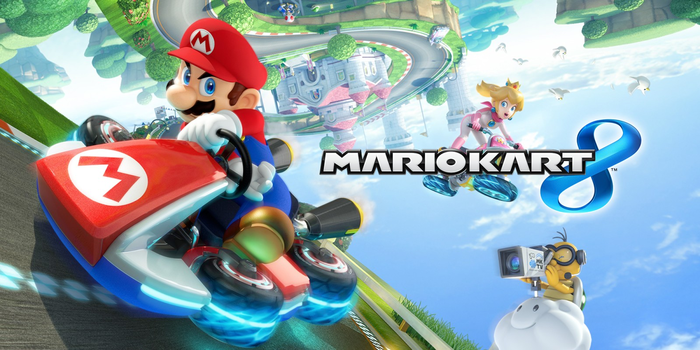

Game Top Year
Juegos 2014
-
The Last of Us RemasterizadoThe Last of Us Remastered para PS4 es una adaptación a la consola de Sony de uno de los mejores juegos de PS3. Esta versión remasterizada contará con mejoras gráficas respecto al original y con todo el contenido descargable extra lanzado, como la campaña Left Behind.
-
Bayonetta 2Bayonetta 2 para WiiU nos presenta la secuela del primer título de la saga. En exclusiva para la consola de Nintendo, el juego permitirá el juego interactuando con la pantalla táctil del pad de WiiU además de soportar el sistema Off-TV Play. Según Platinum Games, desarrolladores del título, este hack’n’slash aportará una jugabilidad frenética y basada en la originalidad de forma muy fluida aunque el jugador eligirá entre el control clásico o táctil. Además de eso el juego también incorpora una nueva y misteriosa compañera y el modo multijugador.
-
Kingdom Hearts HD 2.5 ReMIXSi os quedasteis con ganas de más después de Kingdom Hearts HD 1.5 ReMIX, ahora llega esta remasterización de las versiones definitivas adaptadas a la alta definición. Los juegos incluídos son Kingdom Hearts II Final Mix de PS2, que era exclusivo de Japón, Kingdom Hearts Birth by Sleep Final Mix de PSP, también exclusivo del país nipón, y las cinemáticas restauradas de Kingdom Hearts Re:coded.

-
Grand Theft Auto VGrand Theft Auto V para Xbox One es una versión mejorada y ampliada del GTA V original aparecido en Xbox 360 en 2013. Contará con nuevos gráficos y nuevo contenido como armas, vehículos o misiones, además de una banda sonora ampliada y más jugadores en el modo online. Nos cuenta la épica historia de Michael, Franklin y Trevor en la ciudad de Los Santos y sus alrededores.
- 
-
Mario Kart 8 Mario Kart 8 mezcla la jugabilidad clásica de esta saga de culto con nuevas mejoras jugables como la posibilidad de contar con la gravedad como elemento clave en las carreras. Al amplio elenco de vehículos se le unen nuevos elementos como alas delta y motocicletas además de la capacidad de interactuar con el agua o las paredes verticales. Todo ello para conformar un título que llega para ofrecer, también, muchas más posibilidades en personalización y jugabilidad gracias al Off-TV en el pad de la consola.
-
Donkey Kong Country: Tropical FreezeLas dos dimensiones son protagonistas en este nuevo título del popular gorila de Nintendo. En esta versión para WiiU el protagonista se enfrentará a diferentes pantallas en las que un ejército vikingo será el enemigo. Un trabajo realizado en alta definición con el que esta joya de lo retro vuelve a conquistar nuestras pantallas. El juego también cuenta con la presencia de Dixie Kong y está disponible tanto en formato físico como en la eShop. Las plataformas de siempre como nunca las habías visto.
-
How to Survive: Storm Warning EditionSe trata de una nueva edición para PS4 del juego acción de supervivencia zombie. Incluye el juego original, así como nuevos mapas, personajes, modos, armas y trucos. Con todas estas novedades el jugador podrá disfrutar del título mientras construye sus herramientas para sobrevivir a legiones de zombis, o bien fortificar a tus compañeros y evitar que les maten.
-
Final Fantasy X HD RemasterSquare Enix realiza una revisión en alta definición de Fantasy X. Esta remasterización incluye la versión más completa del juego. Después de su debut en Play Station 2 el juego contará con cross-save entre las dos versiones y permitirá que las partidas entre PS3 y PSVita sean totalmente compatibles. El título celebra una década desde que este RPG de la popular saga Final Fantasy saliese al mercado.
-
The Walking Dead: Season Two - Episode 4: Amid the RuinsThe Walking Dead para PC es una aventura de supervivencia ambientada en el mismo universo de pesadilla que esta serie de cómics, en el cual los zombis han acabado con la civilización tal y como la conocemos. En esta segunda temporada controlamos a Clementine, la coprotagonista de la primera. Ahora nos llega el cuarto episodio, penúltimo de la temporada, y que deja todo listo para la conclusión... hasta la tercera, claro.
-
South Park: La Vara de la VerdadAcción y rol se dan la mano en este juego basado en el universo South Park para Xbox 360. El título nos pone en la piel de un niño recién llegado a una ciudad en la que un simple juego de niños se convertirá en una gran batalla. Con armas legendarias, poderes y el estilo cómico y gañán que caracteriza a esta serie de culto, el jugador deberá hacerse con su lugar en este pueblo en el que tantas grandes historias nos han explicado Cartman, Kyle, Kenny o Stan